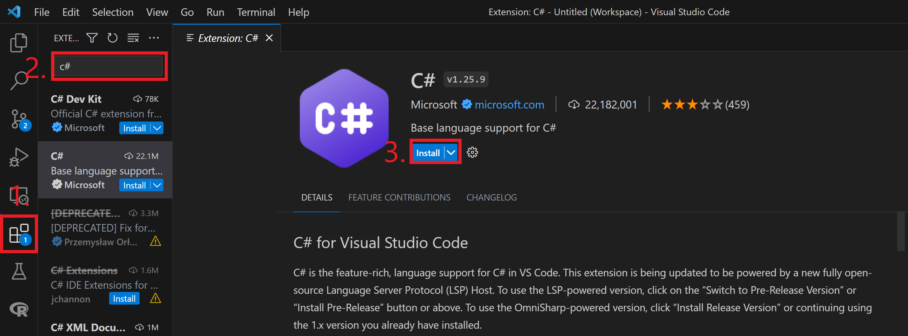

Download and install the latest version of Visual Studio Code from the official website.
Install the C# Extension: Launch Visual Studio Code and open the Extensions view by clicking on the square icon on the left sidebar or using the shortcut Ctrl+Shift+X. Search for "C#" in the extensions marketplace and click on the "C# for Visual Studio Code" extension by Microsoft. Click on the "Install" button to install the extension.
C# development requires the .NET Core SDK, which provides the necessary tools and libraries. Visit the .NET Core download page and download the latest version of the SDK for your operating system. Follow the installation instructions provided by Microsoft.
Verify .NET Core Installation: Open a new terminal window in Visual Studio Code by going to "View" then "Terminal" or using the shortcut Ctrl+ ``. Type the command:
If you see the version number of the installed .NET Core SDK, it means the installation was successful.
using System;
namespace HelloWorld {
class Program {
static void Main(string[] args) {
Console.WriteLine("Hello World!");
}
}
}
Hello World!